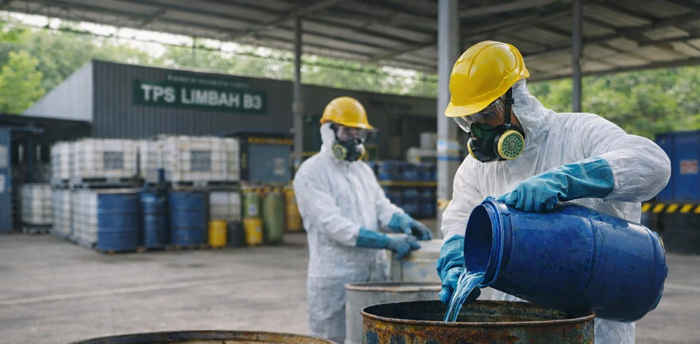

01
Pengolahan Termal
Digunakan untuk jenis limbah tertentu yang membutuhkan pemusnahan melalui proses panas terkontrol, termasuk incineration pada fasilitas yang memenuhi persyaratan.
Tentang B3 · Teknologi
Setiap limbah B3 membutuhkan pendekatan pengolahan yang tepat berdasarkan karakteristik, risiko, bentuk fisik, dan tujuan akhir pengelolaannya.
Ekosistem Terbaik
SPLI adalah mitra strategis perusahaan pengumpulan, pemusnahan dan pemanfaatan limbah B3, menjalin kerjasama dengan berbagai perusahaan pengelolaan limbah B3 sebab berbagai jenis limbah di kelola dengan cara yang berbeda-beda.
SPLI menempatkan proses identifikasi dan pemilahan sebagai tahap penting sebelum limbah masuk ke tahap pengangkutan dan pengolahan.

Metode Umum
Digunakan untuk jenis limbah tertentu yang membutuhkan pemusnahan melalui proses panas terkontrol, termasuk incineration pada fasilitas yang memenuhi persyaratan.
Bertujuan mengurangi mobilitas kontaminan dan membuat limbah lebih stabil sebelum tahap pengelolaan lanjutan.
Meliputi proses pemisahan, netralisasi, pengendapan, atau perlakuan kimia lain sesuai karakter limbah.
Untuk limbah yang memenuhi kriteria tertentu, pendekatan pemanfaatan dapat mendukung efisiensi sumber daya dan ekonomi sirkular.